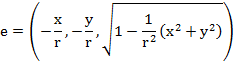
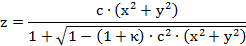
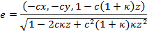
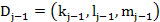
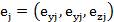

Before calculating the refraction, the normal vector at the surface should be calculated according to the type of the surface, the curvature of the surface, the shape of the surface, and the position of the intersection point.
The normal vector of spherical surface:

 in this function.
in this function.The unit normal vector of the aspherical surface:
Here we only use the expression of the conic section:

This is concluded according to the normal vector of spherical surface:

The incident angle should also be calculated before refraction. Local incident angle between the ray and the normal vector of the surface of given direction cosines is calculated. Since the coordinates are rotational symmetrical, the angle is always positive.
Direction cosines of the incident ray at the surface j 
Local unit normal vector at the surface j 
The incident angle is

Created with the Personal Edition of HelpNDoc: Easily create EBooks